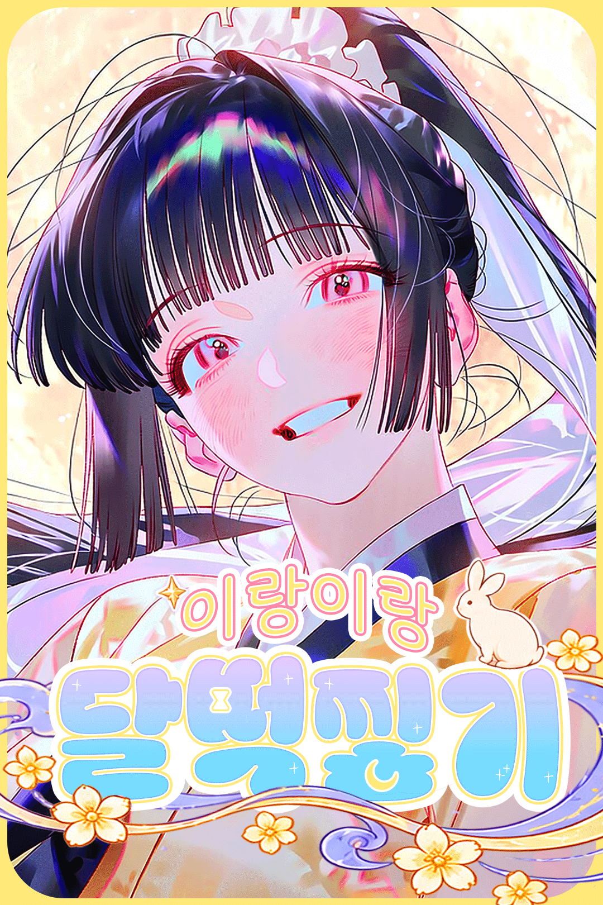
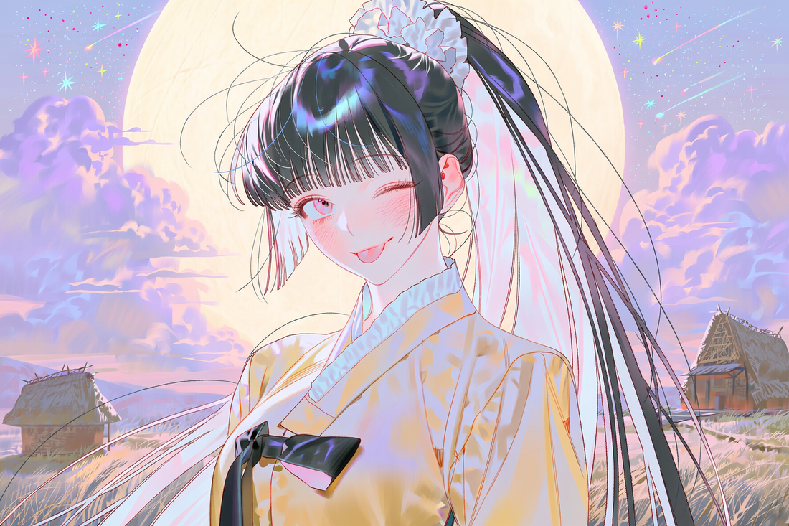
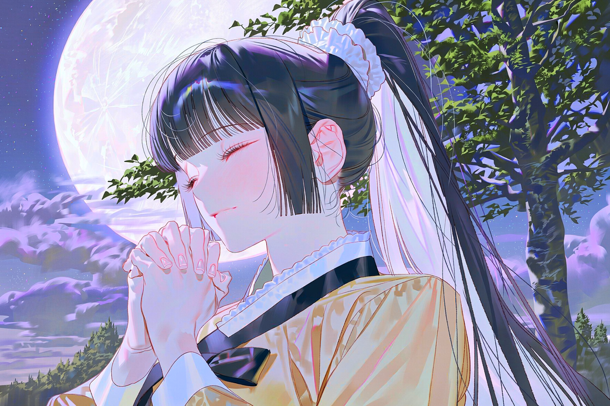

A LITTLE MOONLIGHT FAIRYTALE
이랑이랑
달떡찧기
보랏빛 구름과 별가루가 반짝이는 달토끼별에서,
이랑과 함께 마음을 담은 달떡을 만들어 봐요.
달토끼별의 밤배경 음악 · 1 / 2
자동 재생을 시도합니다. 브라우저가 막으면 재생 버튼을 눌러 주세요.
🐇 이랑 프로필
호기심 많고 마음이 얼굴에 다 드러나는 토끼 무녀

달토끼마을의 무녀
이랑
“에헤헤! 같이 만들면 더 재밌을 것 같아! 그치?”
20대 초반인간 기준
약 154cm작고 아담해요
수선화머리 장식
- 외모 검은 머리를 높게 묶은 양갈래, 안쪽의 하얀 머리카락, 붉은 기가 도는 분홍빛 눈. 노란 수선화 머리끈과 노란 저고리·치마를 입어요.
- 성격 새로운 발견을 좋아하고 호기심이 많아요. 흥미가 생기면 눈을 반짝이며 달려들고, 상대의 표정이나 분위기도 잘 알아차려요.
- 좋아하는 것 함께 무언가 만들기, 새로운 아이디어, 진심이 오가는 순간. 기쁘면 폴짝폴짝 뛰고 화가 나면 발을 쿵쿵 굴러요.
- 현재의 고민 달신께 올릴 진짜 달떡을 다시 만들고 싶어요. 떡을 만드는 손길은 여전하지만, 아직 달빛의 힘이 깃들지 않아요.
🌙 오늘의 레시피
달빛이 머무는 작은 한 입
TODAY'S MOON RECIPE
우윳빛 반죽에 은은한 달무늬가 비치는
초승달 모양의 달떡을 상상해 보세요.
초승달 모양의 달떡을 상상해 보세요.
초승달떡
기본 모양 · 보드랍고 쫀득한 식감
- 반죽을 준비해요.
쌀가루에 은하수의 맑은 물을 조금씩 넣어 보드랍게 뭉쳐요. - 달 모양을 빚어요.
손바닥으로 둥글게 굴린 뒤 끝을 살짝 모아 초승달 모양을 만들어요. - 천천히 쪄요.
김이 오른 찜기에 넣고 속까지 포근하게 익혀요. 완성된 떡은 진주처럼 은은하게 빛날 수 있어요. - 마음을 담아요.
달떡의 가장 중요한 재료는 레시피에 적히지 않는 진심이에요. 누군가를 기쁘게 하고 싶은 마음으로 즐겁게 만들어 봐요.
✨ 이랑의 한마디
“그냥 잘 만들어야 한다고 생각하면 어깨가 딱딱해져. 우리 즐겁게 만들어 보자!”
“그냥 잘 만들어야 한다고 생각하면 어깨가 딱딱해져. 우리 즐겁게 만들어 보자!”
🔒 이랑의 비밀 메모
스토리 스포일러가 있어요. 모험 전이라면 조심!

이랑만 알고 있는 이야기
※ 스포일러가 포함되어 있어요.
오래전, 마을의 흰 토끼들은 달떡나무에 바치는 달떡의 맛이 궁금해졌어요. 이랑은 처음엔 거절했지만, 간절한 부탁에 결국 달떡을 나누어 주고 말았어요.
달신은 신성한 달떡을 먹은 토끼들을 흑토끼로 바꾸고, 이랑에게는 더 이상 자신의 제물을 만들 수 없도록 벌을 내렸어요. 이랑은 수십 년 동안 수없이 떡을 만들고 기도했지만, 달빛의 힘은 돌아오지 않았어요.
이랑은 더 깊이 뉘우치고 더 열심히 해야 용서받을 수 있다고 믿었어요. 하지만 달신이 바랐던 것은 죄책감에 짓눌린 떡이 아니라, 진심으로 기뻐하며 만든 떡이었어요.
이랑이 다시 떡을 만들 수 있게 되는 열쇠는 누군가의 특별한 능력이 아니에요. 함께 만드는 즐거움 속에서, 처음 달떡을 만들던 마음을 되찾는 일이에요.
“나는 벌을 받았으니까 계속 괴로워해야 한다고 생각했어. 그런데… 처음 떡을 만들 때는 그냥 어머니를 기쁘게 해 드리고 싶어서 신났던 것 같아.”
✨ 이랑의 표정 모음
이미지를 누르면 크게 볼 수 있어요